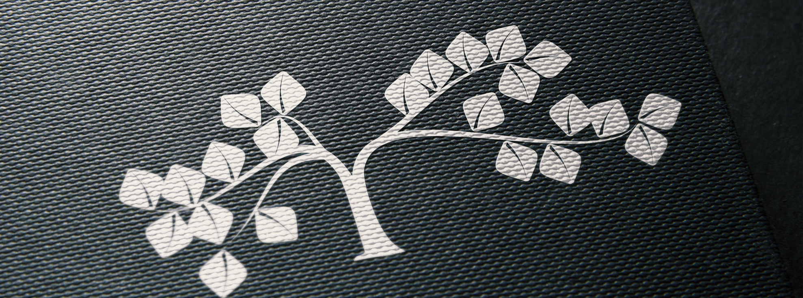
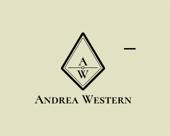
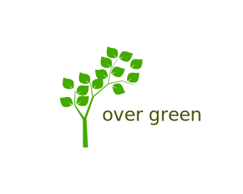
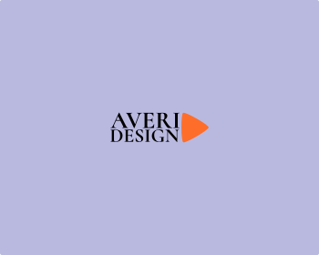

A curated archive of logo designs. Each entry explores visual identity through geometry, color, and symbolic composition. The collection is structured for reference, analysis, and visual documentation.

This mockup presents the logo in a clean and balanced layout, emphasizing clarity and symbolic presence. The neutral background and subtle shadows enhance depth without distracting from the core identity. Ideal for showcasing minimalist design with narrative intent.
This logo combines symmetry and organic motion to evoke transformation, lightness, and spatial fluidity. The abstract butterfly form suggests openness and evolution, making it suitable for projects related to wellness, creativity, or experiential environments.

Personal brandmark for a consultant or designer. The diamond frame and central dot evoke precision and balance, while the serif name adds a refined tone. Ideal for printed stationery and minimalist digital headers.
Conceptual placeholder for visual systems. The overlapping squares and centered label suggest a modular, content-agnostic space. Ideal for mockups and design documentation.
Abstract logo built around a thin double circle and the word “FOCUS” at its core. It evokes clarity, precision, and subject isolation. Ideal for motivational visuals or strategic design contexts.

Modern eco-friendly logo featuring a stylized tree and lowercase naming. It evokes nature, growth, and systemic sustainability. Ideal for green startups or educational initiatives.

Contemporary logo with bold/light typography and a forward-pointing images orange triangle. It suggests motion, creative direction, and clarity. Ideal for design studios or personal branding.

Institutional logo with two-tier naming and a directional arrow ending in a red dot. It suggests precision, goal-setting, and forward motion. Ideal for financial consulting or strategic banking platforms.
Minimal logo featuring a framed “R” and clean sans serif naming. The concentric circles suggest elegance and order, while the shape subtly evokes a folded napkin on the arm — a quiet nod to hospitality and attentive service.
Friendly, modern logo featuring handwritten initials inside a rounded blue triangle. The full name balances structure and clarity, ideal for administrative consulting and operational support services.
{kind=link}
{kind=link}
{kind=link}
{kind=link}
{kind=link}
{kind=link}
{kind=link}
{kind=link}
{kind=link}